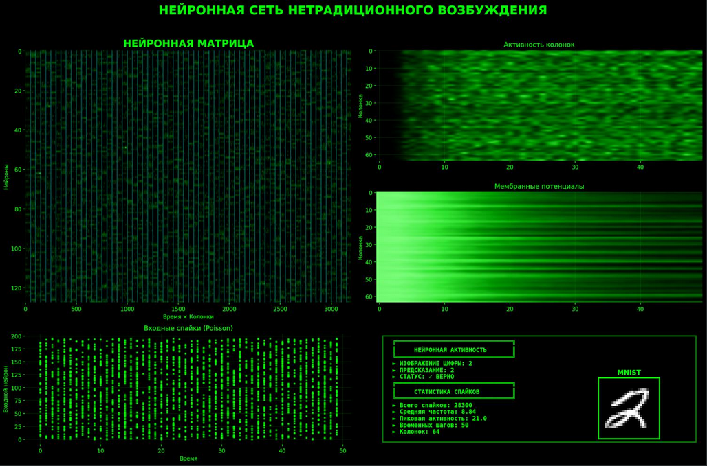
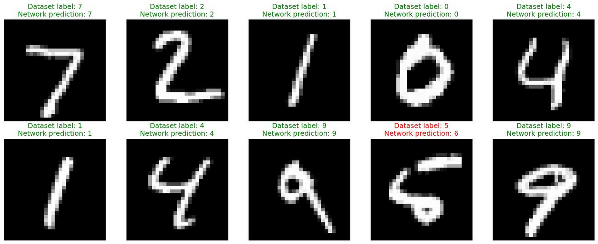

Данная статья не стремится к научной полноте и не содержит формул, однако включает ссылки на исследования, которые были использованы при её подготовке. Статья призвана познакомить читателя с тем, как биологические механизмы могут применяться при разработке искусственных нейронных сетей для создания сильного искусственного интеллекта (AGI).
В прошлой статье [1] мы рассмотрели сложную структуру нейронной сети в виде кортикальных колонок. Однако передача сигнала в ней осталась такой же, как в обычных искусственных нейронных сетях. Давайте заменим её на биологический вариант.
В традиционных сетях сигнал передаётся непрерывно: нейрон сразу выдаёт число, которое передаётся дальше по сети. Нейроны в слоях обычно работают синхронно — все одновременно вычисляют своё значение и передают его следующему слою.
Биологические нейроны устроены иначе. Они не передают непрерывные числа, а генерируют короткие электрические импульсы, называемые спайками. Спайк — это дискретное событие: либо нейрон «выстрелил», либо нет. Информация кодируется не в амплитуде сигнала, а в частоте и точном времени спайков [2].
Мозг анализирует паттерны этих импульсов: когда именно и как часто нейрон «щелкает». При этом нейроны в мозге работают асинхронно — каждый может активироваться в своё время, независимо от соседей.
Один нейрон может генерировать 3 спайка в секунду, другой — 10, и мозг извлекает информацию именно из этих паттернов активности. Таким образом, кодирование информации происходит не только через то, какие нейроны активны, но и через ритм их импульсов.
Один из популярных типов спайковых нейронов называется «нейрон с утечкой» (Leaky Integrate-and-Fire, LIF). Он имитирует мембранный потенциал биологического нейрона: потенциал накапливается при получении входных спайков и постепенно «утекает» со временем. Когда потенциал достигает порогового значения, нейрон генерирует выходной спайк и сбрасывается к исходному уровню [2].
Создадим новый файл под названием brain_spiking.py и импортируем необходимые пакеты:
#!/usr/bin/env python3
import torch
from torch import nn
import torch.nn.functional as F
import networkx as nx
import math
Для создания LIF-нейрона нам понадобится указать его свойства:
class LIFNeuron(nn.Module):
def __init__(self, tau_mem: float = 20.0, tau_syn: float = 5.0, threshold: float = 2.0, reset: float = 0.0):
super().__init__()
self.threshold = threshold
self.reset = reset
self.register_buffer('alpha', torch.tensor(math.exp(-1.0 / tau_mem)))
self.register_buffer('beta', torch.tensor(math.exp(-1.0 / tau_syn)))
def forward(self, input_current, mem, syn):
syn = self.beta * syn + input_current
mem = self.alpha * mem + syn
spike = (mem >= self.threshold).float()
mem = mem * (1.0 - spike) + self.reset * spike
return spike, mem, syn
Механизм работы нейрона следующий: входные сигналы input_current от других нейронов формируют синаптический ток syn, который влияет на мембранный потенциал mem. Если накопленный потенциал превышает пороговое значение, нейрон генерирует спайк и возвращает мембрану к начальному состоянию self.reset. При недостаточном входном токе мембранный потенциал постепенно уменьшается с коэффициентом затухания self.alpha.
По аналогии с предыдущей статьей создадим класс кортикальной колонки, но заменим обычные нейроны на спайковые LIF-нейроны. На вход колонки поставим линейные слои для преобразования входных спайков в токи для каждого LIF-нейрона. Эти токи затем передаются в слои возбуждающих и тормозящих LIF-нейронов в соотношении 80% возбуждающих и 20% тормозящих [3]. Для каждого типа нейронов зададим разные пороги и времена утечки. Инициализируем входные слои методом Каминга с учётом нелинейности ReLU, для стабилизации дисперсии сигналов:
class SpikeColumn(nn.Module):
def __init__(self, in_feat: int, out_feat: int, e_i_ratio: float = 0.8, tau_mem: float = 20.0, tau_syn: float = 5.0):
super().__init__()
self.out_feat = out_feat
self.n_exc = int(out_feat * e_i_ratio)
self.n_inh = out_feat - self.n_exc
self.fc_exc = nn.Linear(in_feat, self.n_exc, bias=False)
self.fc_inh = nn.Linear(in_feat, self.n_inh, bias=False)
self.lif_exc = LIFNeuron(tau_mem=tau_mem, tau_syn=tau_syn, threshold=2.5)
self.lif_inh = LIFNeuron(tau_mem=tau_mem*0.8, tau_syn=tau_syn*0.8, threshold=2.0)
nn.init.kaiming_normal_(self.fc_exc.weight, nonlinearity='relu')
nn.init.kaiming_normal_(self.fc_inh.weight, nonlinearity='relu')
with torch.no_grad():
self.fc_exc.weight *= 0.3
self.fc_inh.weight *= -0.3
def init_state(self, batch_size, device):
return {
'mem_exc': torch.zeros(batch_size, self.n_exc, device=device),
'syn_exc': torch.zeros(batch_size, self.n_exc, device=device),
'mem_inh': torch.zeros(batch_size, self.n_inh, device=device),
'syn_inh': torch.zeros(batch_size, self.n_inh, device=device),
}
def forward(self, spike_input, state):
current_exc = self.fc_exc(spike_input)
current_inh = self.fc_inh(spike_input)
spike_exc, mem_exc, syn_exc = self.lif_exc(current_exc, state['mem_exc'], state['syn_exc'])
spike_inh, mem_inh, syn_inh = self.lif_inh(current_inh, state['mem_inh'], state['syn_inh'])
spikes = torch.cat([spike_exc, -spike_inh], dim=1)
new_state = {
'mem_exc': mem_exc,
'syn_exc': syn_exc,
'mem_inh': mem_inh,
'syn_inh': syn_inh,
}
return spikes, new_state
При работе (метод forward) наша спайковая кортикальная колонка преобразует входные спайки в токи, которые затем обрабатываются LIF-нейронами для генерации выходных спайков.
Теперь, для сохранения сложной топологии межколоночных связей, добавим вспомогательную функцию создания графа «малого мира» из предыдущей статьи:
def make_small_world(num_nodes: int, k: int = 4, p: float = 0.1) -> torch.Tensor:
G = nx.watts_strogatz_graph(num_nodes, k, p)
adj = torch.zeros(num_nodes, num_nodes, dtype=torch.float32)
for i, j in G.edges():
adj[i, j] = 1.0
adj[j, i] = 1.0
return adj
Биологические нейронные сети не просто передают спайки — они обладают синаптической пластичностью: если две структуры часто активируются вместе, их связь усиливается; если редко — ослабевает. В нашей архитектуре топология «малого мира» определяет возможные связи между колонками. Добавим механизм STDP (Spike-Timing-Dependent Plasticity), который будет динамически регулировать силу этих межколоночных связей на основе совместной активности колонок:
class STDP(nn.Module):
def __init__(self, num_columns: int, tau_plus: float = 20.0, tau_minus: float = 20.0, a_plus: float = 0.01, a_minus: float = 0.012, formation_threshold: float = 0.8, pruning_threshold: float = 0.05, max_density: float = 0.25):
super().__init__()
self.num_columns = num_columns
self.a_plus = a_plus
self.a_minus = a_minus
self.formation_threshold = formation_threshold
self.pruning_threshold = pruning_threshold
self.max_density = max_density
self.register_buffer('decay_plus', torch.tensor(math.exp(-1.0 / tau_plus)))
self.register_buffer('decay_minus', torch.tensor(math.exp(-1.0 / tau_minus)))
self.register_buffer('connection_potential', torch.zeros(num_columns, num_columns))
self.register_buffer('connection_usage', torch.zeros(num_columns, num_columns))
def compute_update(self, pre_spikes, post_spikes, pre_trace, post_trace):
pre_trace = self.decay_plus * pre_trace + pre_spikes
post_trace = self.decay_minus * post_trace + post_spikes
ltp = self.a_plus * torch.ger(post_spikes, pre_trace)
ltd = -self.a_minus * torch.ger(post_trace, pre_spikes)
return ltp + ltd, pre_trace, post_trace
def update_connection_potential(self, pre_activity, post_activity):
correlation = torch.ger(post_activity, pre_activity)
self.connection_potential = 0.99 * self.connection_potential + 0.01 * correlation
def update_connection_usage(self, adjacency_mask, weight_strength):
usage = adjacency_mask * weight_strength.abs()
self.connection_usage = 0.95 * self.connection_usage + 0.05 * usage
Важно понимать: STDP в данной реализации работает на уровне колонок, а не отдельных нейронов. Это сделано для возможности расчетов на обычном оборудовании (CPU или GPU), в противном случае, при включении STDP на уровне нейронов понадобится специализированный нейроморфный процессор, позволяющий нейронам спайкать на аппаратном уровне [4]. Данный код также может быть преобразован в нейроморфный вариант [5] для выполнения на нейроморфном железе, однако недоступность подобных процессоров выводит эту тему за рамки статьи.
Параметры pre_spikes и post_spikes представляют собой агрегированную активность колонок (усреднённую частоту спайков всех нейронов в колонке)[6]. Механизм отслеживает, какие пары колонок часто активируются вместе, и соответствующим образом модифицирует веса связей между ними.
Механизм работы STDP включает два ключевых процесса:
Дополнительно отслеживаются два показателя:
Мы описали все необходимые элементы и теперь можем создать кортикально-спайковую нейронную сеть с полной динамической топологией на уровне кортикальных колонок:
class DynamicTopologyNetwork(nn.Module):
def __init__(self,
num_columns: int = 64,
in_dim: int = 784,
col_out: int = 128,
top_out: int = 10,
graph_k: int = 8,
graph_p: float = 0.15,
time_steps: int = 50,
e_i_ratio: float = 0.8,
tau_mem: float = 20.0,
tau_syn: float = 5.0,
use_dynamic_topology: bool = True,
topology_update_freq: int = 100,
stdp_lr: float = 5e-5):
super().__init__()
self.num_columns = num_columns
self.time_steps = time_steps
self.col_out = col_out
self.use_dynamic_topology = use_dynamic_topology
self.topology_update_freq = topology_update_freq
self.stdp_lr = stdp_lr
self.register_buffer('training_step', torch.tensor(0))
self.input_scale = nn.Parameter(torch.ones(in_dim) * 0.5)
self.columns = nn.ModuleList([SpikeColumn(in_dim, col_out, e_i_ratio=e_i_ratio, tau_mem=tau_mem, tau_syn=tau_syn) for _ in range(num_columns)])
initial_topology = make_small_world(num_columns, k=graph_k, p=graph_p)
if use_dynamic_topology:
self.topology = nn.Parameter(initial_topology, requires_grad=False)
else:
self.register_buffer('topology', initial_topology)
self.inter_weights = nn.Parameter(torch.randn(num_columns, num_columns) * 0.05)
self.stdp = STDP(num_columns)
self.register_buffer('pre_trace', torch.zeros(num_columns))
self.register_buffer('post_trace', torch.zeros(num_columns))
self.readout = nn.Sequential(
nn.Linear(num_columns * col_out, 512),
nn.ReLU(),
nn.Dropout(0.2),
nn.Linear(512, top_out)
)
self.register_buffer('spike_rate_avg', torch.ones(num_columns) * 0.05)
self.register_buffer('target_rate', torch.tensor(0.05))
def _update_topology(self):
with torch.no_grad():
current_density = self.topology.sum().item() / (self.num_columns ** 2)
no_connection = (self.topology.data == 0)
high_potential = (self.stdp.connection_potential > self.stdp.formation_threshold)
candidates_for_formation = no_connection & high_potential
if current_density < self.stdp.max_density:
num_to_add = int((self.stdp.max_density - current_density) * self.num_columns ** 2)
if num_to_add > 0 and candidates_for_formation.sum() > 0:
potential_flat = self.stdp.connection_potential[candidates_for_formation]
if len(potential_flat) > num_to_add:
threshold = torch.topk(potential_flat, num_to_add).values[-1]
to_add = candidates_for_formation & (self.stdp.connection_potential >= threshold)
else:
to_add = candidates_for_formation
self.topology.data[to_add] = 1.0
num_added = to_add.sum().item()
has_connection = (self.topology.data > 0)
low_usage = (self.stdp.connection_usage < self.stdp.pruning_threshold)
weak_weights = (self.inter_weights.data.abs() < 0.1)
candidates_for_pruning = has_connection & low_usage & weak_weights
num_to_remove = candidates_for_pruning.sum().item()
if num_to_remove > 0:
self.topology.data[candidates_for_pruning] = 0.0
self.inter_weights.data[candidates_for_pruning] = 0.0
def _poisson_encode(self, x, deterministic=False):
x_scaled = torch.sigmoid(x * self.input_scale) * 0.5
if deterministic:
k = int(x.shape[1] * 0.1)
topk_vals, topk_idx = torch.topk(x_scaled, k, dim=1)
spikes = torch.zeros_like(x_scaled)
spikes.scatter_(1, topk_idx, (topk_vals > 0.3).float())
else:
spikes = (torch.rand_like(x_scaled) < x_scaled).float()
return spikes
def forward(self, x, learn=None):
if learn is None:
learn = self.training
batch_size = x.shape[0]
device = x.device
column_states = [col.init_state(batch_size, device) for col in self.columns]
spike_accumulator = torch.zeros(batch_size, self.num_columns, self.col_out, device=device)
inter_weights = torch.sigmoid(self.inter_weights) * self.topology
if learn:
pre_spikes_history = []
post_spikes_history = []
for t in range(self.time_steps):
input_spikes = self._poisson_encode(x, deterministic=not self.training)
current_column_spikes = []
for col_idx, column in enumerate(self.columns):
spikes, new_state = column(input_spikes, column_states[col_idx])
column_states[col_idx] = new_state
current_column_spikes.append(spikes)
all_spikes = torch.stack(current_column_spikes, dim=1)
col_spike_rates = all_spikes.mean(dim=2)
inter_influence = torch.matmul(col_spike_rates, inter_weights.t())
modulated_spikes = all_spikes * (1.0 + 0.1 * inter_influence.unsqueeze(-1))
spike_accumulator += modulated_spikes
if learn and t > 0:
pre_spikes_history.append(col_spike_rates.mean(dim=0).detach())
post_spikes_history.append(col_spike_rates.mean(dim=0).detach())
if learn and len(pre_spikes_history) > 1:
with torch.no_grad():
current_avg_rate = spike_accumulator.abs().mean() / self.time_steps
adaptive_lr = self.stdp_lr * (self.target_rate / (current_avg_rate + 1e-6)).clamp(0.5, 2.0)
for i in range(0, len(pre_spikes_history) - 1, 10):
pre = pre_spikes_history[i]
post = post_spikes_history[i + 1]
self.stdp.update_connection_potential(pre, post)
self.stdp.update_connection_usage(self.topology, self.inter_weights)
delta, self.pre_trace, self.post_trace = self.stdp.compute_update(
pre, post, self.pre_trace, self.post_trace
)
delta = delta * self.topology
self.inter_weights.data += adaptive_lr * delta
self.inter_weights.data.clamp_(-2.0, 2.0)
if self.use_dynamic_topology:
self.training_step += 1
if self.training_step % self.topology_update_freq == 0:
self._update_topology()
spike_rates = spike_accumulator / self.time_steps
with torch.no_grad():
current_rates = spike_rates.abs().mean(dim=(0, 2))
self.spike_rate_avg = 0.95 * self.spike_rate_avg + 0.05 * current_rates
if self.training:
mean_rate = current_rates.mean()
if mean_rate < 0.03:
self.target_rate = torch.clamp(self.target_rate * 1.1, 0.03, 0.08)
elif mean_rate > 0.08:
self.target_rate = torch.clamp(self.target_rate * 0.9, 0.03, 0.08)
scale = torch.clamp(self.target_rate / (self.spike_rate_avg.unsqueeze(-1) + 1e-6), 0.3, 3.0)
spike_rates = spike_rates * scale.unsqueeze(0)
features = spike_rates.reshape(batch_size, -1)
logits = self.readout(features)
return logits, current_rates
Это не просто спайковая нейронная сеть (SNN) — это самоорганизующаяся система с динамически изменяющейся топологией. Связи между колонками могут формироваться (когда колонки часто активируются совместно) и исчезать (когда связь слабо используется), создавая адаптивную архитектуру, более близкую к биологическим нейронным сетям [7]. STDP модифицирует только те веса, где small world топология разрешает связь.
Архитектура работает на двух различных уровнях организации, каждый со своими механизмами и принципами:
На уровне отдельной колонки происходит обработка входных сигналов через спайковые механизмы:
На уровне межколоночных взаимодействий происходит самоорганизация структуры сети:
Таким образом, внутри колонок происходит быстрая спайковая обработка на временных масштабах миллисекунд, а между колонками — медленная структурная адаптация на масштабах сотен обучающих итераций. Эти два уровня работают согласованно, создавая гибкую и адаптивную архитектуру.
Теперь протестируем архитектуру на практике. Создадим файл train_spiking_brain.py для обучения сети на датасете MNIST. Мы намеренно используем тот же датасет, что и в предыдущей статье, чтобы продемонстрировать эволюцию подхода на знакомой задаче.
Цель эксперимента — не превзойти традиционные нейросети по метрикам точности, а показать, что гибридная архитектура, сочетающая биологические принципы со элементами искусственных сетей, достигает сопоставимых результатов, одновременно открывая значительно более богатое пространство для представления и обработки информации [8]. Код обучения довольно простой, поэтому обойдемся комментариями прямо в коде:
#!/usr/bin/env python3
import torch
import torch.nn.functional as F
from torchvision import datasets, transforms
from torch.utils.data import DataLoader
from brain_spiking import DynamicTopologyNetwork
import time
batch_size = 128 # размер батча для обучения
epochs = 40 # количество полных проходов по датасету
learning_rate = 5e-4 # скорость обучения для градиентного спуска
weight_decay = 1e-4 # L2-регуляризация для предотвращения переобучения
hyperparams = {
"num_columns": 64, # количество кортикальных колонок в сети
"in_dim": 784, # размерность входа (28×28 пикселей MNIST)
"col_out": 128, # количество нейронов (возб.+торм.) в каждой колонке
"top_out": 10, # количество выходных классов (цифры 0-9)
"graph_k": 8, # количество ближайших соседей в топологии малого мира
"graph_p": 0.15, # вероятность дальних связей в графе малого мира
"time_steps": 50, # количество временных шагов для развёртки спайковой динамики
"e_i_ratio": 0.8, # доля возбуждающих нейронов
"tau_mem": 20.0, # константа времени утечки мембранного потенциала (больше = дольше память)
"tau_syn": 5.0, # константа времени утечки синаптического тока (скорость затухания входа)
"use_dynamic_topology": True, # разрешить рост и удаление связей между колонками
"topology_update_freq": 100, # частота пересмотра топологии (каждые N шагов обучения)
"stdp_lr": 5e-5 # скорость пластичности межколоночных связей через STDP
}
# загрузка MNIST
transform = transforms.Compose([transforms.ToTensor(), transforms.Normalize((0.1307,), (0.3081,)), transforms.Lambda(lambda x: x.view(-1))])
train_set = datasets.MNIST(root='./data', train=True, download=True, transform=transform)
test_set = datasets.MNIST(root='./data', train=False, download=True, transform=transform)
train_loader = DataLoader(train_set, batch_size=batch_size, shuffle=True, num_workers=4, pin_memory=True)
test_loader = DataLoader(test_set, batch_size=batch_size, shuffle=False, num_workers=4, pin_memory=True)
# создание модели
device = torch.device('cuda' if torch.cuda.is_available() else 'cpu')
model = DynamicTopologyNetwork(**hyperparams).to(device)
# настройки обучения
optimizer = torch.optim.AdamW([
{'params': model.readout.parameters(), 'lr': learning_rate},
{'params': model.input_scale, 'lr': learning_rate * 0.05},
{'params': model.inter_weights, 'lr': learning_rate * 0.1}
], lr=learning_rate, weight_decay=weight_decay)
scheduler = torch.optim.lr_scheduler.CosineAnnealingLR(
optimizer,
T_max=len(train_loader) * epochs,
eta_min=learning_rate * 0.01
)
# оценка производительности
@torch.no_grad()
def evaluate(model, loader, device):
model.eval()
correct = 0
total = 0
all_spike_rates = []
for x, y in loader:
x, y = x.to(device), y.to(device)
logits, spike_rates = model(x)
preds = logits.argmax(dim=1)
correct += (preds == y).sum().item()
total += y.size(0)
all_spike_rates.append(spike_rates.mean().item())
accuracy = correct / total
avg_spike_rate = sum(all_spike_rates) / len(all_spike_rates)
return accuracy, avg_spike_rate
# обучение внутри эпохи
def train_epoch(model, train_loader, optimizer, scheduler, device, epoch):
model.train()
epoch_loss = 0.0
correct = 0
total = 0
epoch_spike_rates = []
for batch_idx, (x, y) in enumerate(train_loader, start=1):
x, y = x.to(device), y.to(device)
optimizer.zero_grad(set_to_none=True)
logits, spike_rates = model(x, learn=True)
loss = F.cross_entropy(logits, y)
target_rate = model.target_rate
rate_loss = torch.mean((spike_rates - target_rate) ** 2)
total_loss = loss + 0.05 * rate_loss
total_loss.backward()
torch.nn.utils.clip_grad_norm_(model.parameters(), max_norm=0.5)
optimizer.step()
scheduler.step()
with torch.no_grad():
preds = logits.argmax(dim=1)
correct += (preds == y).sum().item()
total += y.size(0)
epoch_loss += loss.item()
epoch_spike_rates.append(spike_rates.mean().item())
if batch_idx % 100 == 0:
print(f'Epoch {epoch:02d} [{batch_idx:3d}/{len(train_loader)}] Loss={loss.item():.4f} Accuracy={(correct / total)*100:.2f}% LR={scheduler.get_last_lr()[0]:.6f}')
train_loss = epoch_loss / len(train_loader)
train_acc = correct / total
avg_spike_rate = sum(epoch_spike_rates) / len(epoch_spike_rates)
return train_loss, train_acc, avg_spike_rate
# цикл обучения
history = {'train_loss': [], 'train_acc': [], 'test_acc': [], 'spike_rates': []}
total_start = time.time()
for epoch in range(1, epochs + 1):
train_loss, train_acc, train_spike_rate = train_epoch(model, train_loader, optimizer, scheduler, device, epoch)
test_acc, test_spike_rate = evaluate(model, test_loader, device)
history['train_loss'].append(train_loss)
history['train_acc'].append(train_acc)
history['test_acc'].append(test_acc)
history['spike_rates'].append(test_spike_rate)
print(f"\nEpoch {epoch}/{epochs} - Train Loss: {train_loss:.4f} | Train Accuracy: {train_acc*100:.2f}% | Test Accuracy: {test_acc*100:.2f}%")
total_time = time.time() - total_start
# финальная оценка и сохранение
final_acc, final_spike_rate = evaluate(model, test_loader, device)
torch.save({
"epoch": epochs,
"model_state_dict": model.state_dict(),
"test_accuracy": final_acc,
"spike_rate": final_spike_rate,
"hyperparams": hyperparams,
"history": history,
"training_time": total_time
}, "DynamicTopologyNetwork.pth")
print(f"\nОбучение завершено за {total_time/60:.1f} мин")
print(f"Финальная точность: {final_acc*100:.2f}%")
Запустим 64 кортикальные колонки на 40 эпохах обучения: python train_spiking_brain.py
Каждые 100 шагов будут выводиться данные о текущем уровне обучения:
Epoch 01 [100/469] Loss=1.4257 Accuracy=46.41% LR=0.000500
Epoch 01 [200/469] Loss=0.8772 Accuracy=59.13% LR=0.000499
Epoch 01 [300/469] Loss=0.6398 Accuracy=65.66% LR=0.000499
Epoch 01 [400/469] Loss=0.6708 Accuracy=69.41% LR=0.000498
EPOCH 1/40 - Train Loss: 1.0290 | Train Accuracy: 71.49% | Test Accuracy: 69.99%
Epoch 02 [100/469] Loss=0.5339 Accuracy=83.44% LR=0.000496
Epoch 02 [200/469] Loss=0.4850 Accuracy=83.86% LR=0.000494
Epoch 02 [300/469] Loss=0.4401 Accuracy=84.17% LR=0.000492
Epoch 02 [400/469] Loss=0.5152 Accuracy=84.34% LR=0.000490
EPOCH 2/40 - Train Loss: 0.5100 | Train Accuracy: 84.44% | Test Accuracy: 83.30%
...
Epoch 20 [100/469] Loss=0.3904 Accuracy=92.73% LR=0.000007
Epoch 20 [200/469] Loss=0.2344 Accuracy=92.82% LR=0.000006
Epoch 20 [300/469] Loss=0.2745 Accuracy=92.76% LR=0.000005
Epoch 20 [400/469] Loss=0.2477 Accuracy=92.87% LR=0.000005
Epoch 20/40 - Train Loss: 0.2373 | Train Accuracy: 91.93% | Test Accuracy: 91.87%
...
Epoch 40 [100/469] Loss=0.0102 Accuracy=96.12% LR=0.000003
Epoch 40 [200/469] Loss=0.0089 Accuracy=96.63% LR=0.000002
Epoch 40 [300/469] Loss=0.0091 Accuracy=96.51% LR=0.000001
Epoch 40 [400/469] Loss=0.0072 Accuracy=96.87% LR=0.000002
Epoch 40/40 - Train Loss: 0.0056 | Train Accuracy: 97.14% | Test Accuracy: 96.02%
Обучение завершено за 387 мин. Финальная точность: 96.02%
Обучение на видеокарте потребляло менее 1 Gb видеопамяти и заняло 6.5 часов. Результат: 96.02% точности на тестовых образцах. Отличный результат на уровне современных традиционных моделей. Для результата в 98%+ необходимо обучить сеть на 100-150 эпохах, так как чем биологичнее сеть, тем дольше (больше эпох) её нужно обучать на обычном оборудовании.
Принципиальное отличие данной архитектуры от традиционных нейронных сетей — это способность работать с временем как с фундаментальным измерением обработки информации.
В обычных нейросетях время отсутствует: входные данные обрабатываются мгновенно, за один проход. Время там — это всего лишь индекс в последовательности.
Наша спайковая сеть работает иначе. Благодаря механизму STDP и спайковой динамике, она обрабатывает информацию через множество временных шагов (time_steps = 50). Каждый входной образ разворачивается во времени как паттерн спайков, и сеть анализирует не статическую картину, а динамический процесс:
Это означает, что сеть может различать паттерны не только по тому, какие колонки активны, но и по тому, когда и в каком порядке они активируются. Два одинаковых набора активных колонок, но с разным временным порядком их возбуждения, будут обработаны по-разному. По сути, время становится дополнительным кодирующим измерением. Сеть может обучаться временным закономерностям: последовательностям событий, ритмам, задержкам между сигналами. Это приближает её к принципам работы биологического мозга, где временная синхронизация нейронных ансамблей играет ключевую роль в кодировании и обработке информации.
Наша архитектура почти полностью биологична: спайковые нейроны, кортикальные колонки, пластичность связей, временная динамика. Однако два элемента остаются классическими анахронизмами — входной и выходной слои.
Входной слой — линейное преобразование пикселей в токи для LIF-нейронов — играет роль сетчатки глаза. Заменить его на биологически корректный вариант мы пока не можем: для этого нужны нейроморфные процессоры и специализированные камеры, способные генерировать настоящие временные спайки из светового потока. Это вопрос аппаратного обеспечения ближайшего будущего.
Выходной слой — другая история. Здесь мы вольны экспериментировать:
self.readout = nn.Sequential(
nn.Linear(num_columns * col_out, 512),
nn.ReLU(),
nn.Dropout(0.2),
nn.Linear(512, top_out)
)
Сейчас это обычный классический перцептрон. Он принимает богатейшую симфонию спайковых паттернов — результат работы десятков колонок, временных корреляций, динамической топологии — и редуцирует всё это многообразие к линейной комбинации весов. Это рабочий подход, но он создаёт концептуальный разрыв. Что если биологический мозг на финальном этапе принятия решений использует нечто принципиально иное?
Существует гипотеза, что сознание оперирует квантовыми эффектами: суперпозицией состояний, запутанностью, интерференцией амплитуд вероятности. От микротрубочек Пенроуза до квантовой когерентности в нейронных ансамблях — идея спорна, но не беспочвенна. Если она верна, наш классический readout — это бутылочное горлышко, где гаснут квантовые корреляции, недоступные детерминистической логике.
В следующей статье мы шагнём за эту границу. Заменим линейный классификатор на слой кубитов — квантовый интерпретатор, способный держать в суперпозиции одновременно все возможные интерпретации входного паттерна. Спайки станут квантовыми состояниями, а ответ сети родится из коллапса волновой функции при измерении.
Это звучит как научная фантастика, но квантовые процессоры и возможность их симуляции на обычных видеокартах уже реальность. Возможно, именно там, на квантовом уровне, скрывается тайна того, как паттерны возбуждения превращаются в осознанный опыт.
В следующей статье мы попробуем приоткрыть эту дверь.


А пока обратите внимание на второе изображение. Оно показывает предсказания сети, которую мы только что обучили. Видно, что сеть справилась со всеми примерами, кроме одного, перепутав 5 с 6. Хотя, если честно, я тоже вижу 6. А что видите вы?
Литература